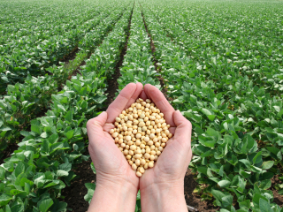
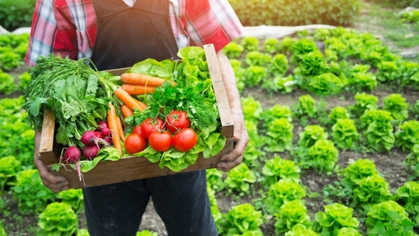
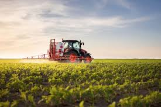
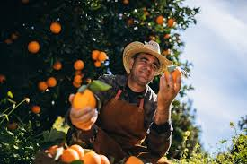
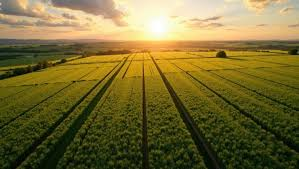

A plantação de grãos é essencial para a produção de alimentos como milho, arroz, soja e trigo. O processo começa com o preparo do solo, seguido da semeadura e dos cuidados com irrigação e controle de pragas. Após o crescimento, os grãos são colhidos, armazenados e distribuídos. O uso de tecnologia tem ajudado a aumentar a produtividade e tornar a produção mais sustentável.

A produção de alimentos para a população é fundamental para garantir a segurança alimentar e a qualidade de vida. Ela envolve o cultivo de grãos, frutas, verduras e a criação de animais, utilizando técnicas que aumentam a produtividade e reduzem impactos ambientais. Com o crescimento da população, é cada vez mais importante investir em tecnologia, planejamento e sustentabilidade para assegurar alimentos suficientes e acessíveis a todos..

O uso de máquinas agrícolas modernas tem transformado a produção no campo, tornando o trabalho mais rápido e eficiente. Equipamentos como tratores, semeadeiras e colheitadeiras permitem plantar, cuidar e colher grandes áreas em menos tempo. Além disso, tecnologias como GPS e sensores ajudam no uso preciso de insumos, reduzindo desperdícios e impactos ambientais. Dessa forma, as máquinas contribuem para aumentar a produtividade e melhorar a qualidade da produção agrícola..

A colheita de alimentos é a etapa final da produção agrícola, quando os produtos são retirados no ponto ideal de maturação. Esse processo pode ser feito manualmente ou com máquinas, dependendo do tipo de cultura e da área plantada. Uma colheita bem realizada evita perdas, mantém a qualidade dos alimentos e facilita o armazenamento e a distribuição até o consumidor..

O campo é uma importante fonte de trabalho e desenvolvimento econômico. As atividades agrícolas geram empregos diretos e indiretos, desde o plantio até a colheita e a comercialização dos produtos. Além disso, o setor rural impulsiona a economia, movimenta o comércio e contribui para o crescimento das regiões, melhorando a qualidade de vida da população..